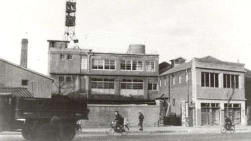
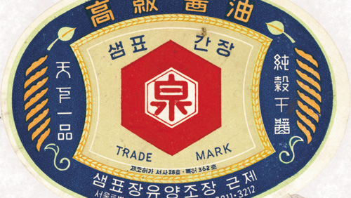
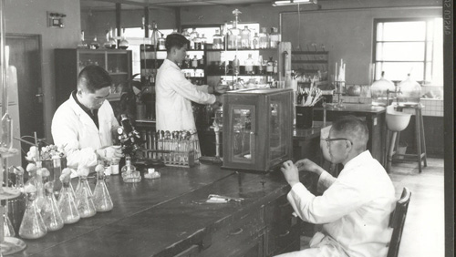
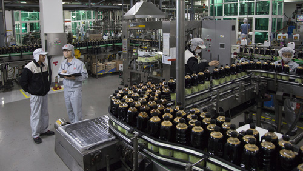
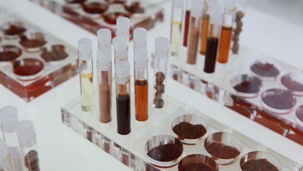
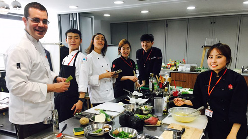
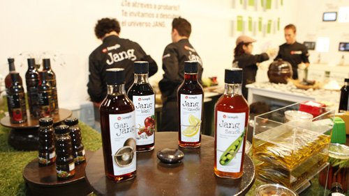
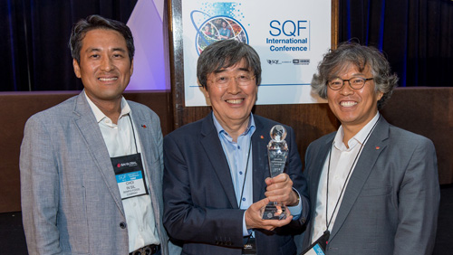
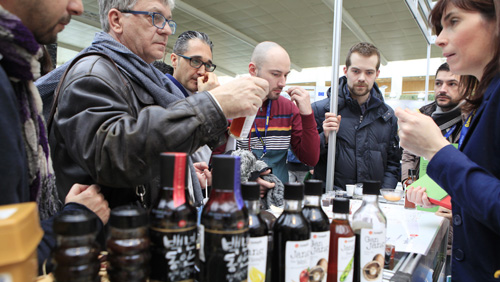

Loved in Korea. Now across the world.
‘I will never produce or sell products that my family would not eat.’
Beginning as Korea’s oldest and most renowned Soy Sauce brand, we used our experience to craft a product that can be enjoyed by everyone – before branching out into products like Kimchi, Gochujang and more.
Quality and taste, uncompromised for over 70 years: it all started with these words from our founder, whose love of family and good food helped build Sempio into Korea’s number one household brand specialising in fermented foods.
A tastier lifestyle for all generations
That’s our vision – so in Korea, we’ve built the first ever research and development centre specialising in fermentation. As well as gaining a number of industry-leading quality and safety certifications, we work with other experts from across the world to innovate, educate and create new and exciting products every day.
Over 76 countries across the globe enjoy the taste of Sempio, and we’ve got branch offices in the United States, China and Spain – some of the culinary world’s biggest influencers. From there, we keep in touch with local chefs, researching ways to promote a more dynamic food culture.
And now, we’re bringing our expertise to the UK. Our quality products make it easy for you to create quick, authentic Korean-inspired dishes at home – just a spoonful of our sauces and pastes will bring your food to life, and our ready-to-cook sauces give you a full taste experience with minimal effort.
Our mission is simple. To explore and connect food cultures from around the world, with products that help expand your culinary horizons.
It starts with Sempio.
1946-1950s
-

1946
Founded Korea's first commercialized Soy Sauce Brewery -

1959
Exported Sempio Soy Sauce for the first time 1980s
-

1987
Began operation of Asia’s largest production facilities in suburban Icheon 2000s
-
2000
Received ISO 14001 certification for environmentally friendly managerial operations Established Sempio Foods Service in Los Angeles, USA2002
Received HACCP quality approval2003
Received certification from KOLAS (Internationally recognized testing organization)2008
Established Sempio China in Shanghai 2010s
-

2012
Started global culinary research projects with Alicia Foundation2013
Opened a Cutting-Edge Fermentation Research Center2013
Received Red Dot Award (Jangproducts)2014
Received Safe Quality Food Institute (SQFI) Practitioner of the Year Award2016
Founded Sempio Barcelona in Spain2018
Opened Yondu Culinary Studio in Manhattan, New York